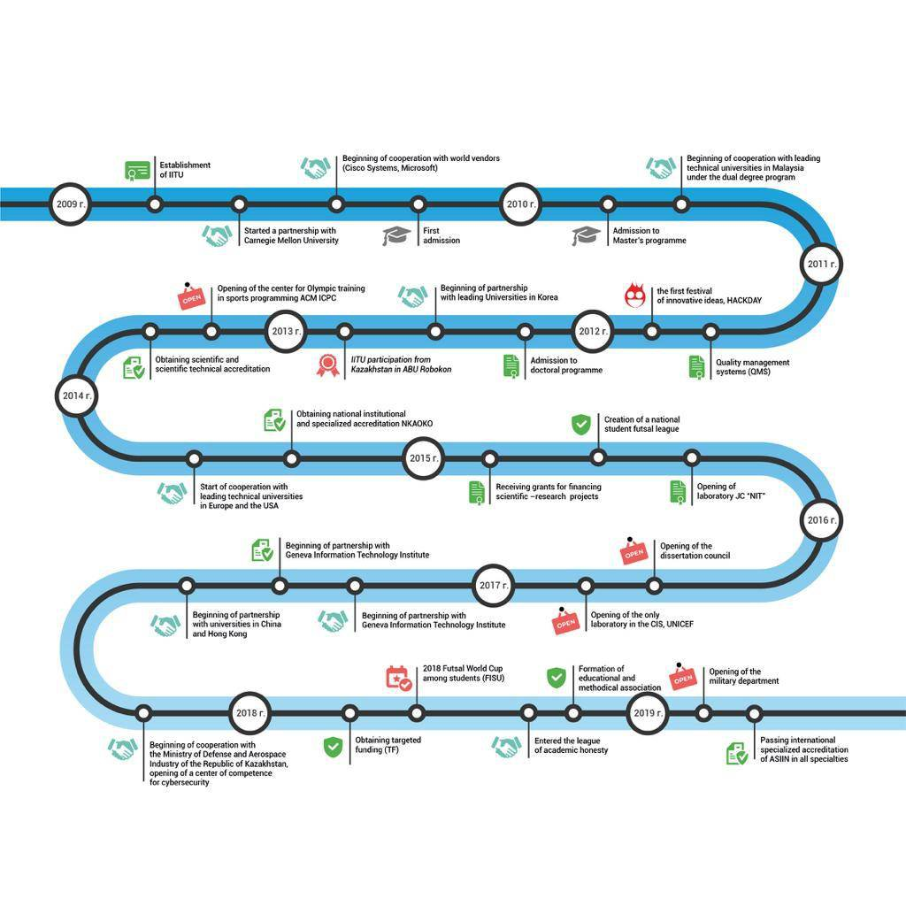

IITU is the only University in Kazakhstan to receive ASIIN institutional international accreditation in 2019 and undergo a formal confirmation of compliance with international standards. “The International University of Information Technology guarantees the fulfillment of institutional, procedural and cultural requirements for high quality teaching and successful learning,” confirms experts at ASIIN (Agency for the Accreditation of Educational Programs in Engineering, Computer Science, Natural Sciences, and Mathematics, Germany).
Over 10 years of development, IITU was able to enter firmly the ranking of the best technical universities in the country. The university is constantly working to improve the quality of educational services, and provides high potential for faculty stuff. In December 2019, according to the rating of the National Chamber of Entrepreneurs “Atameken”, IITU entered the TOP-3 universities of Kazakhstan, as well as the first place in such educational programs as “Information systems” and “Electronic journalism”. The guidance of training specialists in "Information security" at IITU is one of the strongest in Kazakhstan. The training of journalists and media industry specialists in electronic media is carried out using multimedia technologies and the latest information technologies.
The modern infrastructure of the university, the harmonization of educational programs with leading international universities contribute to the dynamic growth of the student body. Currently, more than 4,000 students are studying at IITU under the undergraduate, graduate and PhD doctoral programs. The university trains a new generation of specialists in the field of ICT with knowledge of industry technologies, advanced management, economics and communication skills with in-profound knowledge of the English language.
In 2018, in accordance with the Order of the Minister of Defense of the Republic of Kazakhstan, a military department was opened at IUIT, specializing in training of specialists in cybersecurity, and the Center for Competence in Cybersecurity operates as well. IITU partners are international universities and research and educational organizations in the USA, Germany, Russia, France, Switzerland, Korea, Malaysia, China, etc. Existing academic mobility allows students to gain knowledge and international experience, studying for a semester at universities - partners of the University.
The teachers of the University are especially proud of the fact that after graduating from IITU, the percentage of employed graduates is always stably high: about 90% of the total. IITU pays special attention on the development of personal qualities, leadership skills and creative abilities of students. Active and creative students conduct independently various events so that their student life is vibrant and unforgettable, in charge of the projects that arise admiration and astonishment. The Student Government, which heads more than 20 student organizations, operates in IITU, among them: “Union” - a charitable organization, “League of IT” - a football organization, “Tigers” - a creative organization, “ShadowS” - a dance club, “Music Club” - music club, "Debate Club" - a debate club, "Enactus" - a business organization, "IITU Family" - a volunteer organization, "Anteiku" - an anime club, "IT FM - student radio," Cinema club "- movie club, " IT Theater "- theater club," Ray's Sup "," Light Studio "- media organizations, the
Club for the Lightheaded and Quick-witted, IITU team," FOREVER YOUNG "- Design, and Arts. We also have our own Ministry of Culture, the Ministry of PR and the Security Service.
